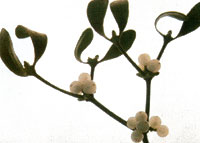
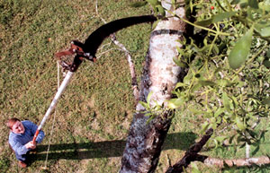
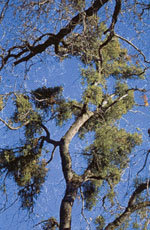
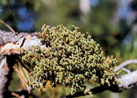

"Ivy, holly, and mistletoe
Make a good Christmas
Wherever they go."
-Old English saying
"The only good mistletoe is no *&@#! mistletoe at all." -Georgia pecan farmer
My baptism beneath the mistletoe came when I was painfully 13.
I was standing in the doorway doing what I always did at parties - watching the other kids have a good time - when Sara came up behind me. The daughter of a dairy farmer, Sara was red-haired and freckled, a good two feet taller than I, at least a hundred times louder, and sturdy - what my parents always called "big boned."
The next thing I knew Sara was bellowing, "Hey look, I caught Krautwurst under the mistletoe!" Everyone in the room turned in time to see Sara grab me by the shoulders, spin me around, mash her face to mine, and give me a hard, straight-on-the-mouth, body-burning kiss that in no way resembled my Aunt Maude's my-how-he's-grown pecks on the cheek at Thanksgiving.
It is a moment frozen bittersweet among my life's experiences. There I stood in front of my peers, as embarrassed as I had ever been in my entire 13 years. But then again, there I stood in front of my peers, as kissed as I had ever been in my entire 13 years.
I've had a love/hate relationship with mistletoe ever since. And so, it seems, has the rest of civilization through the ages.
Mistletoe is not just one plant, but a surprisingly large family of plants, some 1,300 species worldwide. Some have large leaves, some have no leaves. But virtually all are aerial plants: They live above ground, on the limbs of shrubs or trees.
This characteristic explains why few earthly plants are as steeped in superstition as mistletoe: It's not earthly at all. Mistletoe's roots never touch soil, yet the plant flourishes year-round, without apparent nourishment. Even in winter, when its host plant is seemingly lifeless, mistletoe thrives, green as ever.
To the people of early civilizations, there was only one explanation: Mistletoe possessed magical powers. All across northern Europe, mistletoe was accorded special status. It was an all-healer; a cure for epilepsy, an antidote for poisoning. A few sprigs in your home kept witches away and protected your farm from trolls.
The druids of ancient Gaul and what's now the British Isles considered oak trees, and especially the mistletoe that grew from them, sacred Each year, on the fifth night after the new moon following the winter solstice, white-robed priests performed a solemn ritual, cutting mistletoe from oaks using a golden sickle. The mistletoe was then distributed to the people to hang in their homes for good luck and protection.
According to some accounts, the priests would embrace and kiss as part of the ceremony. Folklorists speculate that this led to the tradition of smooching under the mistletoe.
None of these beliefs settled well with the emergence of the Christian faith and the establishment of late December as a sacred holiday. Unlike holly and ivy, which were considered acceptable symbols of eternal life, mistletoe and the practices that went with it were deemed pagan. Nonetheless, the traditions, if not the superstitions, persisted. When Europeans arrived in North America they found mistletoe here, too, and today most Americans still consider the plant a harmless sign of holiday cheer and good fortune.
The fact is, not all mistletoes in the United States are created equal, and few if any are entirely harmless. Of more than 40 species, there are two distinct types: leafy mistletoes and dwarf mistletoes. Both types are semiparasitic, relying on their host trees for water and nutrients, but also manufacturing their own food through photosynthesis.
The leafy mistletoes are the ones we hang in our homes. By far the most common is American mistletoe, which has slightly larger leaves and smaller berries than its European counterpart, and grows in globe-shaped clusters among the branches of deciduous trees.
Dwarf mistletoes have no leaves at all, just bud scales - the plants look like drab twigs. Most dwarf mistletoes grow on conifers in the western United States.
The ancients believed that the plant was delivered from beings above. They were right, at least in the case of leafy mistletoe: The "beings" are birds that eat the berries and then deposit the sticky seeds on branches by way of their drop pings. As each seed germinates, its embryonic root creeps along the branch until it meets a bud or leaf base, then flattens and attaches to the wood, forming a disc called a holdfast. The rootlet then drills into the branch and spreads its developing roots under the bark and into the living tissue.
Dwarf mistletoe plants develop much the same way, but their microscopic seeds aren't spread by birds - they're shot from the mature berries like missiles. The seeds don't travel far, so the plant doesn't spread quickly to other trees. But each infested tree is subjected to a persistent rain of seeds. And to make matters worse, the parasite's lack of leaves means that it steals nearly all its nutrients, as well as moisture, from the host tree.
The result is lethal. Over a period of years, dwarf mistletoe stunts, deforms and' eventually kills the tree on which it grows. In the West, dwarf mistletoe is a major forest pest.
American mistletoe and its leafy cousins seldom kill, but they do rob their hosts of moisture and some minerals, causing stress during drought and reducing crop production on fruit and nut trees.
Although American mistletoe and its cousins are toxic to humans, they're a rich and entirely nontoxic source of nutrition for wildlife. Dwarf mistletoe also provides vital winter forage for animals such as elk. Then too, there's mistletoe's economic contribution. For many families, the plants mean extra pocket money in November and December.
Picking your own mistletoe can be a challenge because the best bunches, it seems, are always highest in the tree. Some folks resort to shooting the sprigs down with a shotgun. I prefer a ladder and a long pole with a nail partially driven into the end and bent over to snag the mistletoe. A sheet spread beneath the tree catches the sprigs. I'm not a superstitious person, but it is bad luck to let mistletoe touch the ground.
The best kissing mistletoe is female mistletoe - plants with plump, white berries. Each of those berries, according to the experts, is good for one kiss.
I wish I'd known that years ago, back when Sara puckered up and planted one on me. Actually, I saw her years later, at my high school class's 20th reunion. There across the room, just past the beer-bellied former jocks and the rich former nerds, I spied a poised, graceful woman with flowing red hair and laughing green eyes.
"Who's that?" I asked an old friend. As I sat there stunned at his answer, Sara noticed me, smiled and waved.
That was the good part. The bad part: It was mid July, and there wasn't a sprig of mistletoe in sight.
|
 DOUGLAS BARBE/CALFLORA Defying its gentle, Chinese-watercolor appearance, this limpid, leafy mistletoe is no darned good for its host. |
 THOMAS WRIGHT/AP Mistletoe's vivid green clumps usually only mean the mistletoe, not the tree, is healthy. |
PAUL CONNORS/AP Kissin' country for the little people, this twiggy, unfashionable dwarf mistletoe grown on conifers in the Western United States |
|
 PAINET |
 COURTESY USDA FOREST SERVICE |
|